Manicure y pedicure en un espacio pensado para hacer una pausa, respirar y regalarte tiempo de calidad. Más que una cita de uñas.
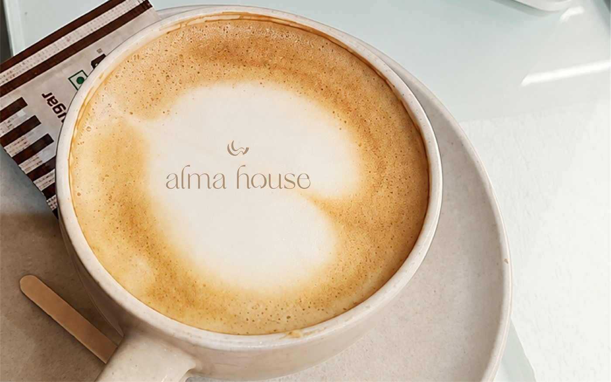
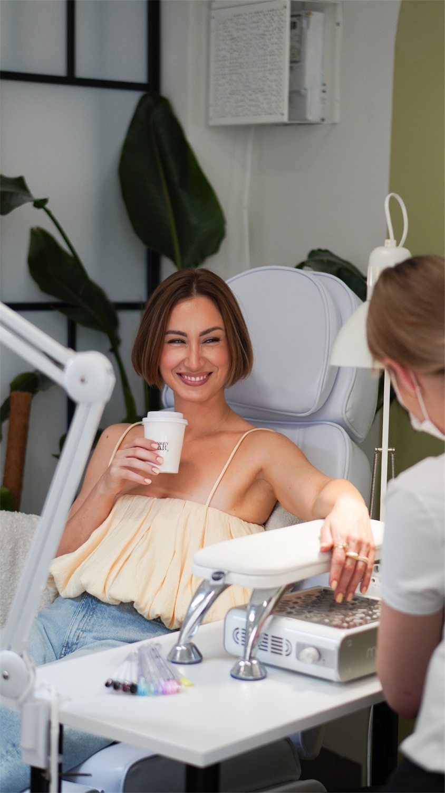
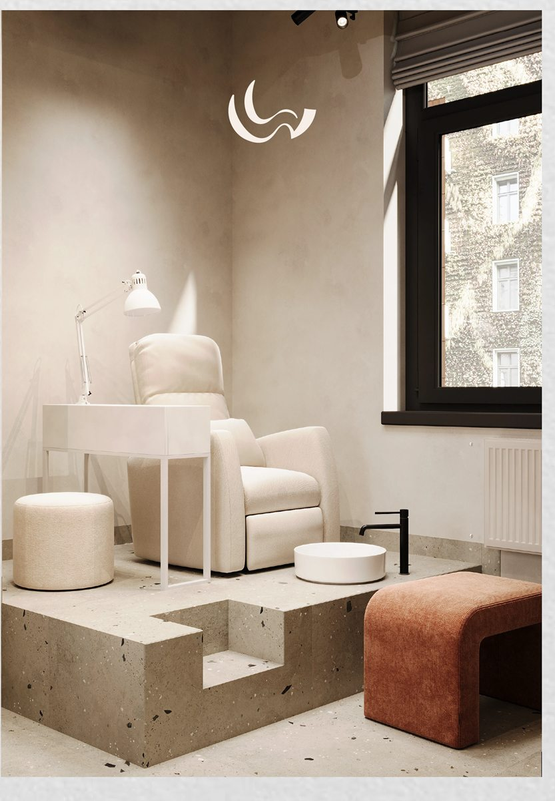
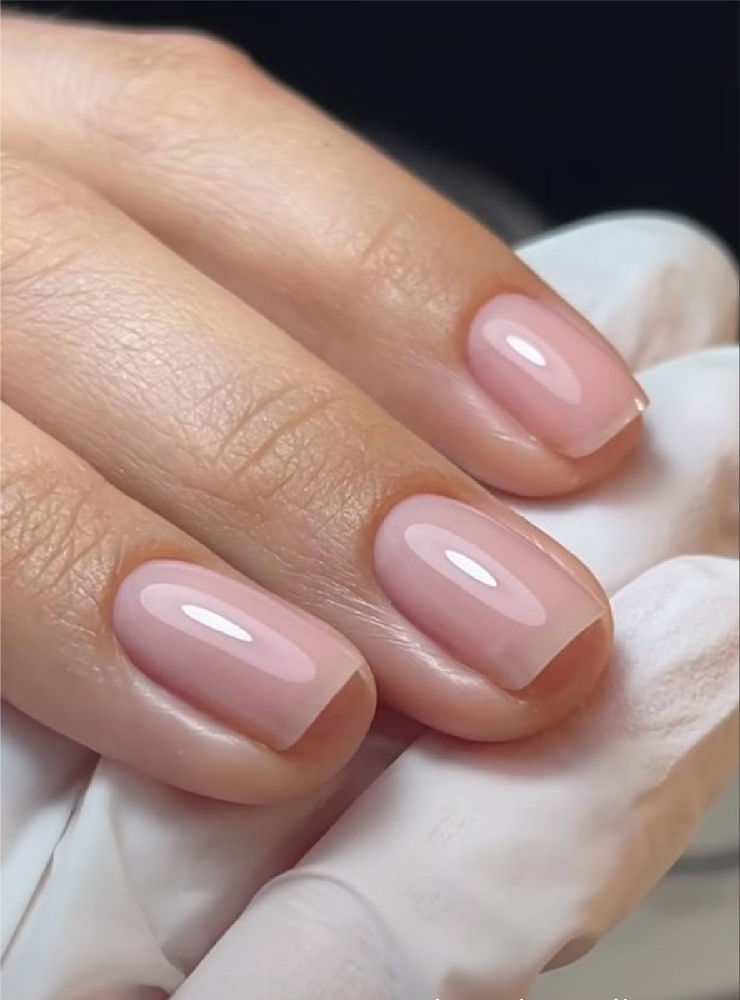
Alma House nace para ser el nail studio de referencia en Cajicá y sus alrededores: un lugar donde el bienestar, la elegancia y el cuidado personal se encuentran. Cada detalle está pensado para que tu visita se sienta como una pausa, no como un turno más.
Diseño cálido, luz suave y un café de bienvenida. Ese plan que necesitas para desconectarte, conversar, reír y sentirte consentida.
Manicure y pedicure en sus técnicas más completas, con productos y procesos que cuidan tus uñas a largo plazo.
Un servicio personalizado y sin prisa, para que cada clienta se sienta escuchada, cuidada y en casa.
Nos tomamos el tiempo para cuidar cada proceso, desde la preparación hasta la última capa de color.
Elige la técnica que mejor se acomode a tu ritmo y a tu estilo. Todas nuestras citas se agendan por WhatsApp.
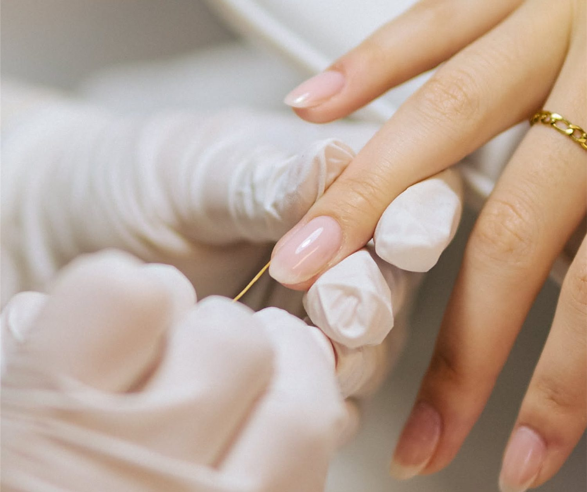
Cuidado de manos con acabados que duran, en el tono que hable de ti. Preparamos, cuidamos y damos color sin prisa.
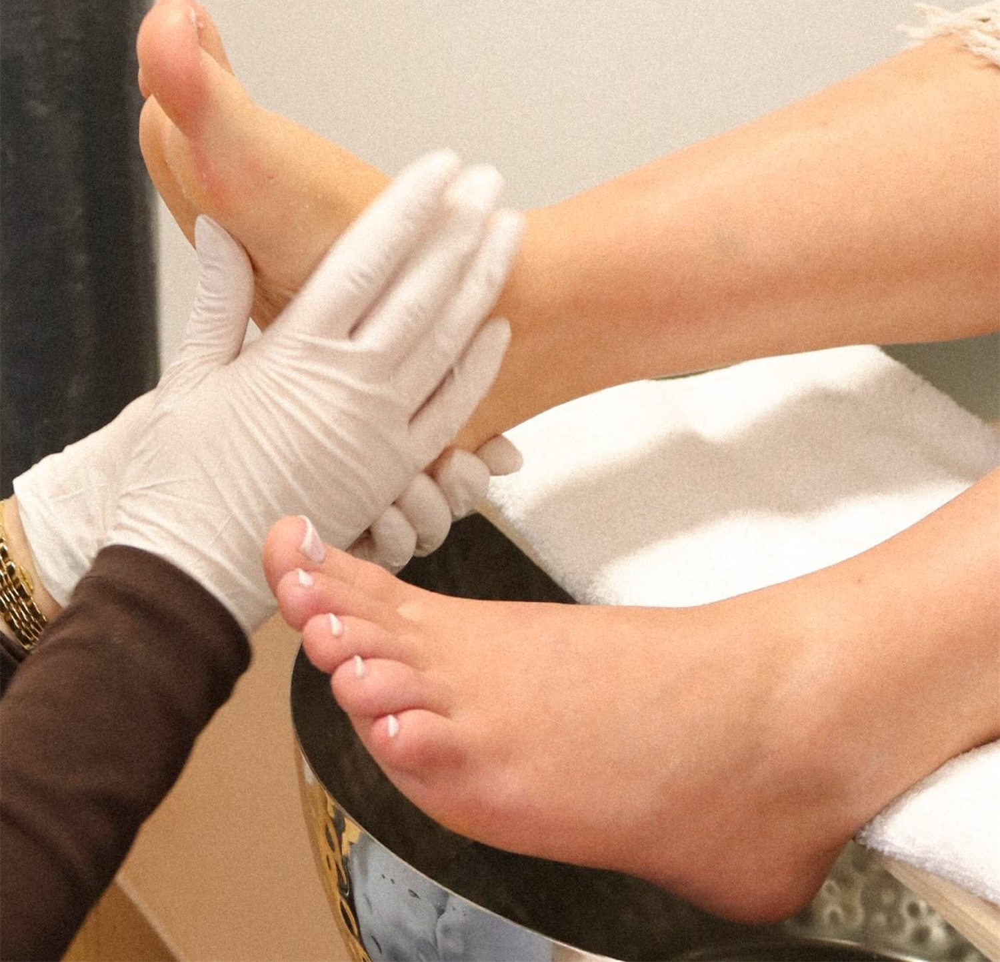
Cuidado de pies con la calma y el detalle que se merecen, en una silla pensada para que te quedes un rato más.
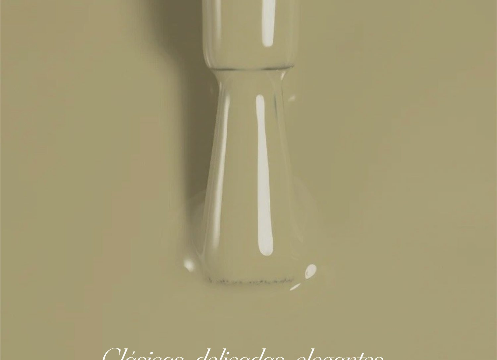
Tus uñas hablan de ti.
Clásicas, delicadas, elegantes o llenas de personalidadAsí se siente y así se ve una visita a Alma House, desde el primer esmalte hasta la última gota.
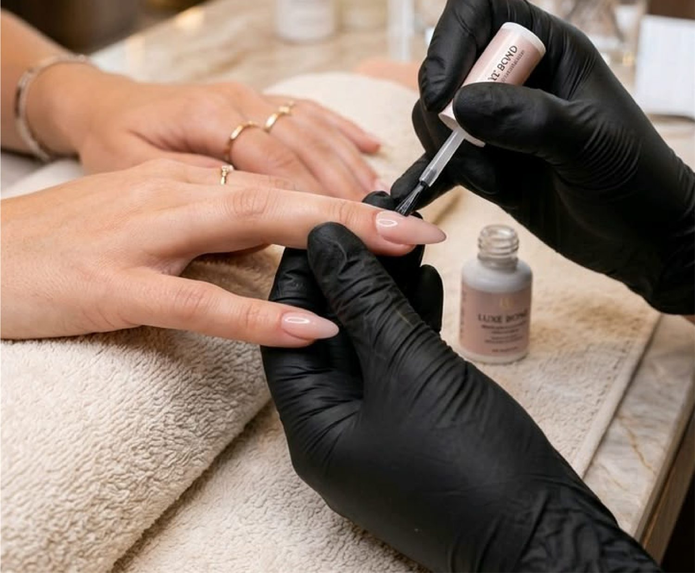
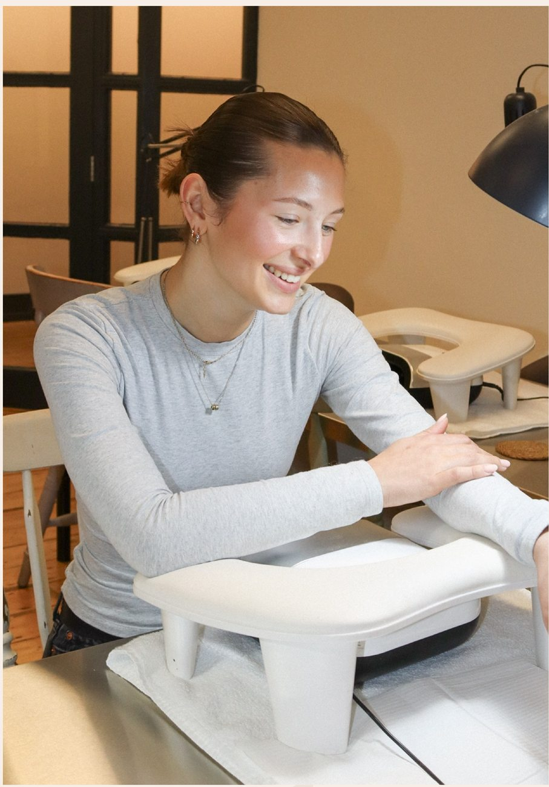
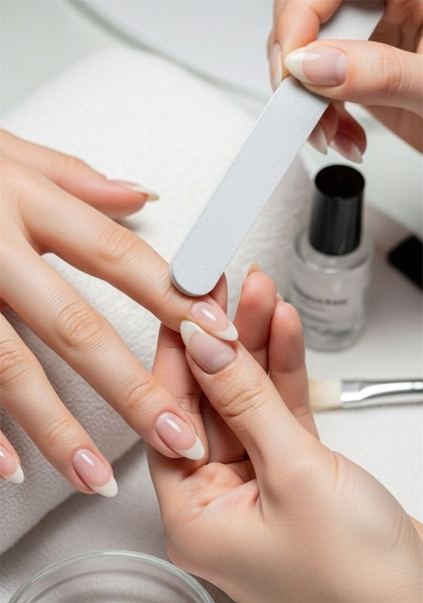
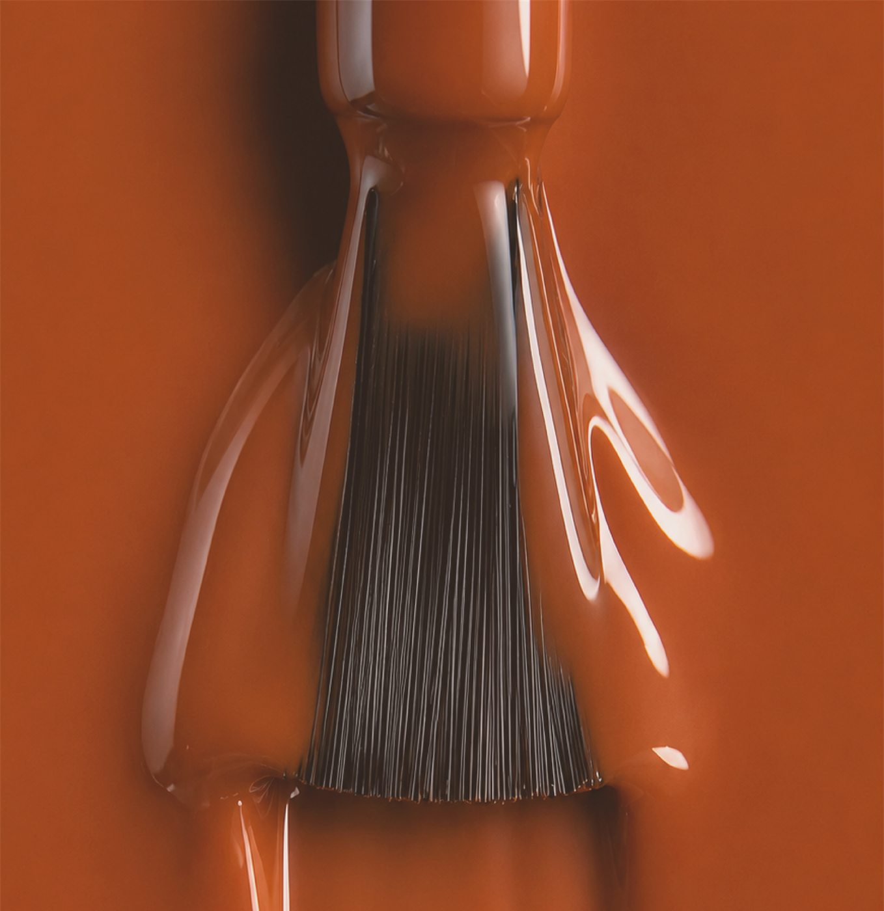
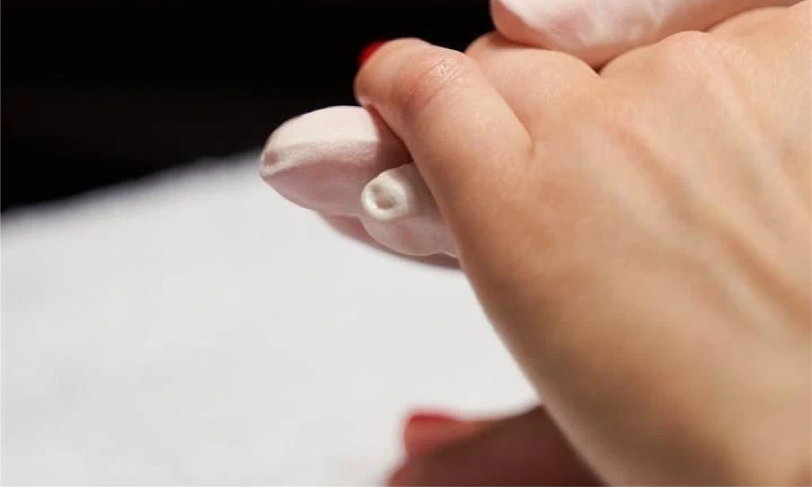
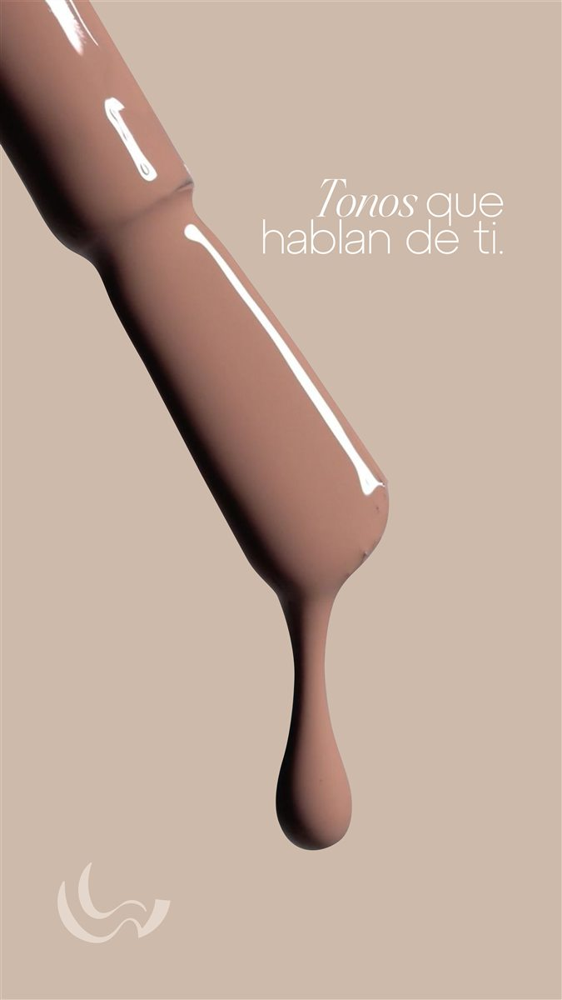
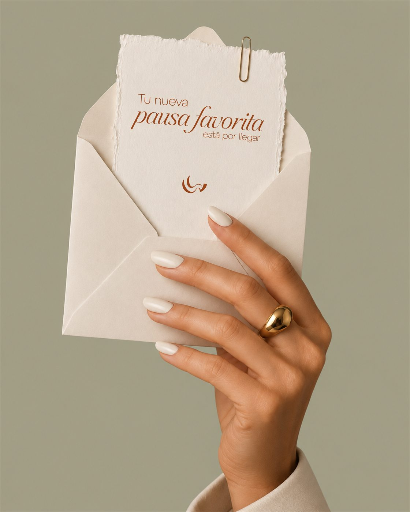
Escríbenos por WhatsApp y agenda tu manicure o pedicure en un par de mensajes. Sin llamadas, sin esperas.
Nuestra línea de reservas se habilita con la apertura. Escríbenos aquí apenas esté activa.
Estamos ultimando cada detalle del estudio. Muy pronto encontrarás aquí la dirección, los horarios y nuestro WhatsApp de reservas.